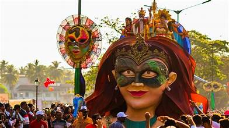
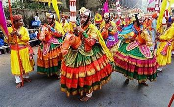
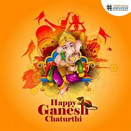
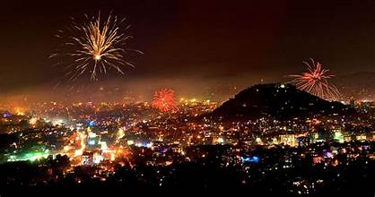
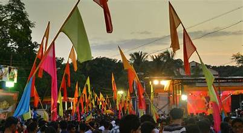
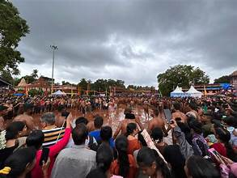
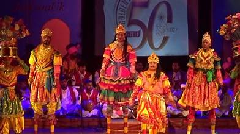
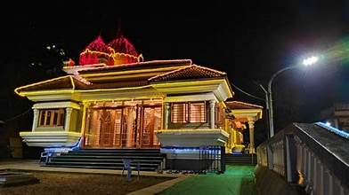
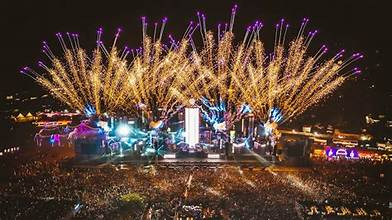
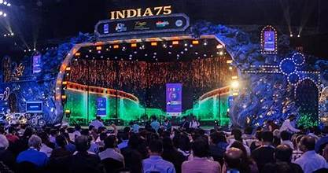

🎉✨ Fairs and Festivals of Goa – A Colorful Extravaganza 🎭🌸
🎭 Carnival – A Vibrant Fiesta

Carnival 🎉
Goa’s iconic festival filled with music, dance, and vibrant parades.
Celebrated in February, marking the beginning of Lent.
Shigmo Festival 🕺
A grand Hindu spring festival celebrated with folk dances, music, and colorful processions.
Marks the harvest season and cultural richness of Goa.

A grand Hindu spring festival celebrated with folk dances, music, and colorful processions.
Marks the harvest season and cultural richness of Goa.
🎅 Christmas – A Celebration of Joy
Christmas 🎄
Goa comes alive with dazzling lights, midnight masses, and joyful celebrations.
Churches are adorned, and carols echo through the night.
Easter 🐣
Celebrated with solemnity followed by feasts and festivities.
Marks the resurrection of Jesus Christ with prayers and processions.
Celebrated with solemnity followed by feasts and festivities.
Marks the resurrection of Jesus Christ with prayers and processions.

🏮 Sao Joao – Festival of Monsoon

Sao Joao 🎭
A unique monsoon festival celebrated with boat races, music, and fun.
Youngsters jump into wells to honor St. John the Baptist.
Feast of St. Francis Xavier ✝️
A major religious event in Old Goa celebrating the life of the patron saint.
Pilgrims from around the world gather at the Basilica of Bom Jesus.
A major religious event in Old Goa celebrating the life of the patron saint.
Pilgrims from around the world gather at the Basilica of Bom Jesus.

🌊 Ganesh Chaturthi – Devotion and Celebration

Ganesh Chaturthi 🕉️
Celebrated with great enthusiasm as Lord Ganesha is welcomed with rituals and festivities.
The idols are later immersed in the sea as part of the Visarjan.
Diwali 🪔
The festival of lights celebrated with diyas, fireworks, and sweet delicacies.
Homes are decorated, and prayers are offered to Goddess Lakshmi.

The festival of lights celebrated with diyas, fireworks, and sweet delicacies.
Homes are decorated, and prayers are offered to Goddess Lakshmi.
💃 Bonderam – A Traditional Festival of Divar

Bonderam 💃
Celebrated on Divar Island, this festival includes vibrant parades and mock battles.
Symbolizes the historical protests of villagers against Portuguese rule.
Chikhal Kalo Festival 🎭
A unique mud festival celebrated in Marcel village.
Marks the monsoon season with playful mud games and folk dances.

A unique mud festival celebrated in Marcel village.
Marks the monsoon season with playful mud games and folk dances.
🎭 Zagor – Goa’s Traditional Folk Drama

Zagor 🎭
A traditional folk drama blending mythology, dance, and music.
Reflects the socio-cultural narratives of Goan communities.
Dindi Festival 🎼
A religious procession honoring Lord Vithoba.
Accompanied by music, dance, and devotional fervor.

A religious procession honoring Lord Vithoba.
Accompanied by music, dance, and devotional fervor.
🎸 Sunburn Festival – Global Music Extravaganza

Sunburn Festival 🎧
Asia’s biggest electronic dance music festival.
Held on Goa’s beaches, attracting global artists and music lovers.
Goa International Film Festival 🎥
Showcases the finest films from across the globe.
Attracts filmmakers, actors, and cinephiles annually.

Showcases the finest films from across the globe.
Attracts filmmakers, actors, and cinephiles annually.